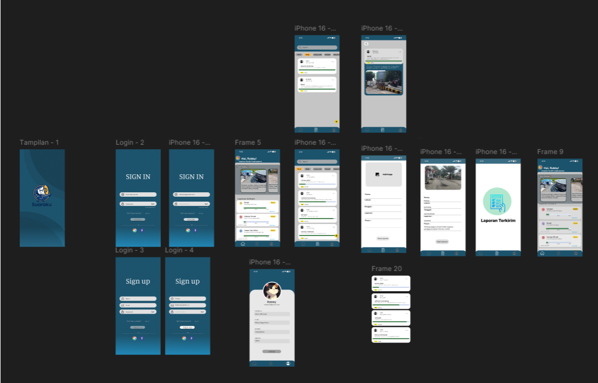
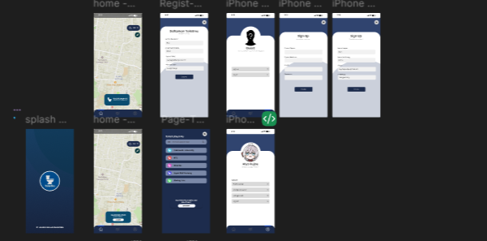
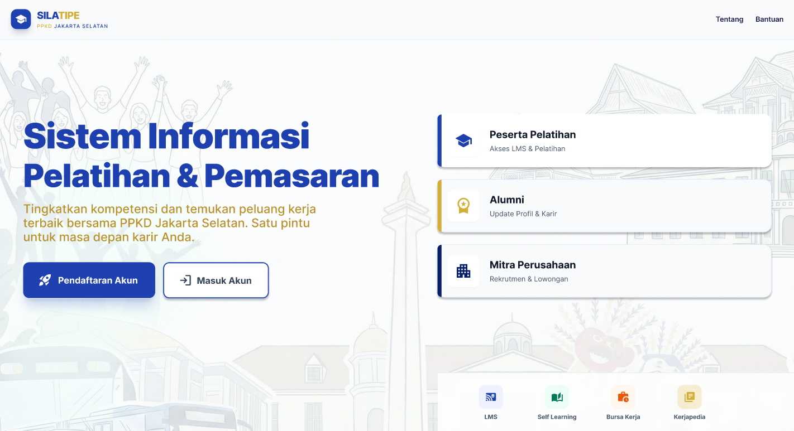

HCI · Kelompok · 2025
Suaraku
Aplikasi pelaporan isu sosial berbasis komunitas. Riset dengan 20 warga, efisiensi navigasi naik 35%.
Proyek UI/UX dari riset sampai prototype hi-fi.

HCI · Kelompok · 2025
Suaraku
Aplikasi pelaporan isu sosial berbasis komunitas. Riset dengan 20 warga, efisiensi navigasi naik 35%.

Design Thinking · Kelompok · 2025
Toiletku
Pencarian & pelaporan toilet umum dengan peta interaktif.

Project Magang · Kelompok · 2025
Silatipe
Pendaftaran Pelatihan PPKD Jakarta Selatan.
Tahapan yang saya jalani dalam setiap proyek.
| NO | Tahap | Aktivitas | Output |
|---|---|---|---|
| 01 | Empathize | Wawancara & observasi pengguna | User insight |
| 02 | Define | Pain points & problem statement | HMW Statement |
| 03 | Ideate | Brainstorm solusi & user flow | Wireframe kasar |
| 04 | Prototype | Lo-fi → Hi-fi di Figma | Prototype interaktif |
| 05 | Test | Usability testing dengan responden | Iterated design |